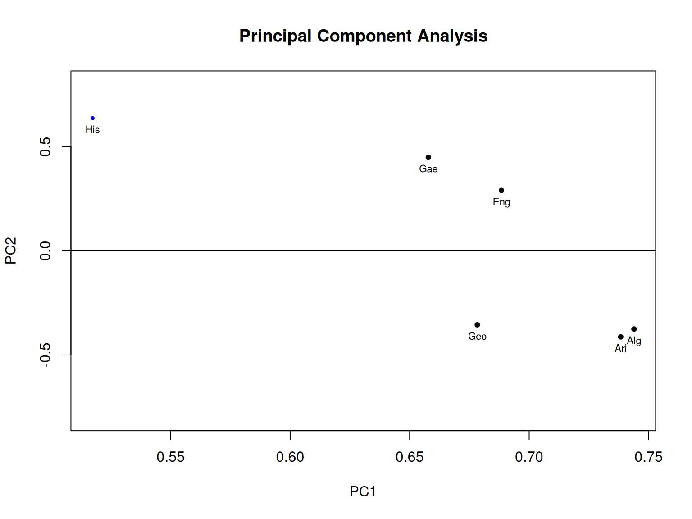
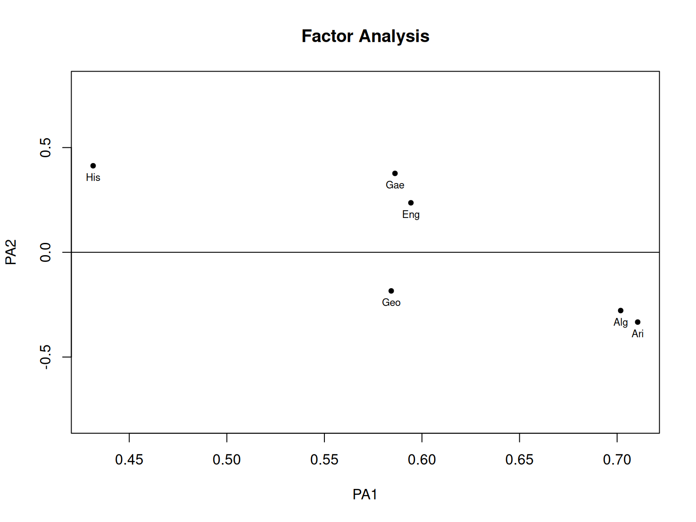
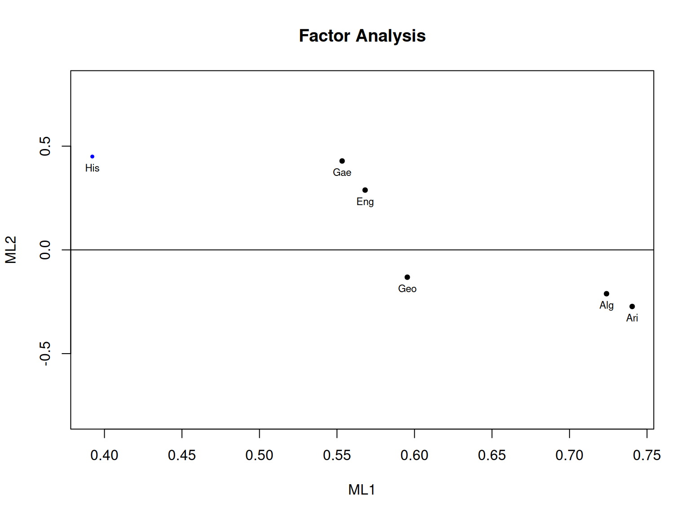
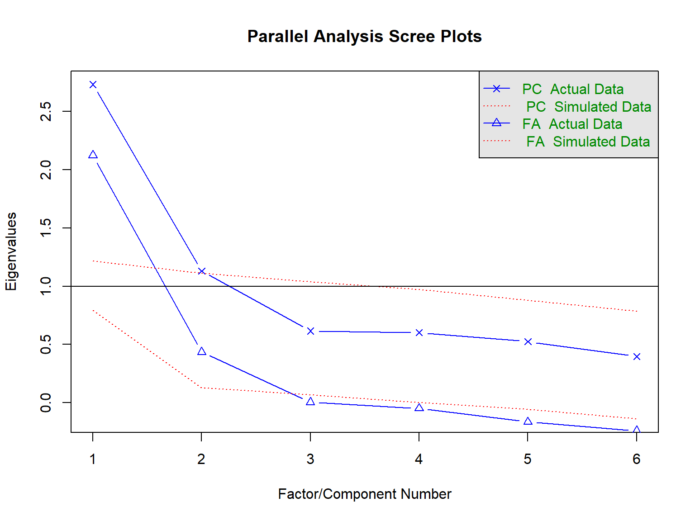
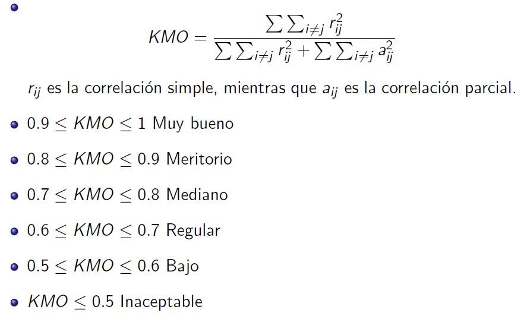

Análisis Factorial Exploratorio
Dra. Rocío Maehara
2 de noviembre de 2019

Introducción
El objetivo básico del EFA es describir las covarianzas entre variables observadas en función de otras no observables que subyacen bajo ellas, denominadas factores.
Si un grupo de variables manifiestas guarda una fuerte correlación entre ellas pero a su vez la correlación con otro grupo de variables es relativamente baja, es sensato pensar que cada grupo pueda ser reflejo de un factor subyacente que cause ese comportamiento diferenciado.
Ejemplo 1
A continuación se presenta la matriz de correlaciones entre las notas de \(n=220\) estudiantes en \(p=6\) asignaturas. La cuestión que se plantea es si esas notas se deben a un único factor subyacente, que podría denominarse “inteligencia general”, o existen varios factores que pueden explicar distintos tipos de inteligencia.
Ejemplo 1
r <- c(1.00,
0.439,1.00,
0.410,0.351,1.000,
0.288, 0.354,0.164,1.000,
0.329,0.320,0.190,0.595,1.000,
0.248,0.329,0.181,0.470,0.464,1.000)
# cargamos la libreria lavaan
library(lavaan)
# convertimos el vector r en la matrix R
R <- lav_matrix_lower2full(r)
# Etiquetamos a las variables de la matriz
colnames(R)<-rownames(R)<-
c("Gae","Eng","His","Ari","Alg","Geo")
R
Ejemplo 1
## Gae Eng His Ari Alg Geo
## Gae 1.000 0.439 0.410 0.288 0.329 0.248
## Eng 0.439 1.000 0.351 0.354 0.320 0.329
## His 0.410 0.351 1.000 0.164 0.190 0.181
## Ari 0.288 0.354 0.164 1.000 0.595 0.470
## Alg 0.329 0.320 0.190 0.595 1.000 0.464
## Geo 0.248 0.329 0.181 0.470 0.464 1.000Ejemplo 1
## $d
## [1] 2.7328841 1.1297704 0.6151739 0.6012219 0.5247969 0.3961529
##
## $u
## [,1] [,2] [,3] [,4] [,5]
## [1,] -0.3979211 0.4224739 0.2378797843 -0.44697886 0.6205763
## [2,] -0.4164293 0.2732052 0.6497850613 0.40590321 -0.3699525
## [3,] -0.3129591 0.5996225 -0.6713466822 0.09898664 -0.2855052
## [4,] -0.4466126 -0.3885864 -0.0008312812 -0.23224145 -0.3517809
## [5,] -0.4499766 -0.3532281 -0.1360853358 -0.40242630 -0.1217941
## [6,] -0.4103173 -0.3340032 -0.2279611918 0.64013367 0.5078616
## [,6]
## [1,] -0.14725080
## [2,] 0.16763850
## [3,] -0.02217036
## [4,] -0.68691430
## [5,] 0.69097829
## [6,] -0.02051222
##
## $v
## [,1] [,2] [,3] [,4] [,5]
## [1,] -0.3979211 0.4224739 0.2378797843 -0.44697886 0.6205763
## [2,] -0.4164293 0.2732052 0.6497850613 0.40590321 -0.3699525
## [3,] -0.3129591 0.5996225 -0.6713466822 0.09898664 -0.2855052
## [4,] -0.4466126 -0.3885864 -0.0008312812 -0.23224145 -0.3517809
## [5,] -0.4499766 -0.3532281 -0.1360853358 -0.40242630 -0.1217941
## [6,] -0.4103173 -0.3340032 -0.2279611918 0.64013367 0.5078616
## [,6]
## [1,] -0.14725080
## [2,] 0.16763850
## [3,] -0.02217036
## [4,] -0.68691430
## [5,] 0.69097829
## [6,] -0.02051222# obtenemos los autovalores y autovectores
auto<-svd(R)
auto
Para obtener la matriz con las cargas debemos multiplicar los autovectores (auto$u) con la raíz cuadrada de la matriz diagonal con los autovalores (diag(auto$d))
Ejemplo 1
## [,1] [,2] [,3] [,4] [,5] [,6]
## [1,] 2.732884 0.00000 0.0000000 0.0000000 0.0000000 0.0000000
## [2,] 0.000000 1.12977 0.0000000 0.0000000 0.0000000 0.0000000
## [3,] 0.000000 0.00000 0.6151739 0.0000000 0.0000000 0.0000000
## [4,] 0.000000 0.00000 0.0000000 0.6012219 0.0000000 0.0000000
## [5,] 0.000000 0.00000 0.0000000 0.0000000 0.5247969 0.0000000
## [6,] 0.000000 0.00000 0.0000000 0.0000000 0.0000000 0.3961529## [,1] [,2] [,3] [,4] [,5]
## [1,] -0.6578207 0.4490503 0.186576299 -0.34658069 0.44956326
## [2,] -0.6884175 0.2903916 0.509646048 0.31473125 -0.26800419
## [3,] -0.5173663 0.6373427 -0.526557479 0.07675275 -0.20682814
## [4,] -0.7383147 -0.4130310 -0.000651999 -0.18007653 -0.25484019
## [5,] -0.7438760 -0.3754484 -0.106735839 -0.31203531 -0.08823116
## [6,] -0.6783135 -0.3550142 -0.178796848 0.49635004 0.36790950
## [,6]
## [1,] -0.09268065
## [2,] 0.10551281
## [3,] -0.01395417
## [4,] -0.43234852
## [5,] 0.43490643
## [6,] -0.01291053# generamos la matriz diagonal de los autovalores
av<-diag(auto$d)
av
# obtenemos la matriz LAMBDA cpn las cargas factoriales
LAMBDA<-auto$u%*%sqrt(av)
LAMBDA
LAMBDA es la matriz con las cargas factoriales (\(\boldsymbol{\Lambda}\)) obtenida usando el método de componentes principales
Ejemplo 1
## Principal Components Analysis
## Call: principal(r = R, nfactors = 2, rotate = "none")
## Standardized loadings (pattern matrix) based upon correlation matrix
## PC1 PC2 h2 u2 com
## Gae 0.66 0.45 0.63 0.37 1.8
## Eng 0.69 0.29 0.56 0.44 1.3
## His 0.52 0.64 0.67 0.33 1.9
## Ari 0.74 -0.41 0.72 0.28 1.6
## Alg 0.74 -0.38 0.69 0.31 1.5
## Geo 0.68 -0.36 0.59 0.41 1.5
##
## PC1 PC2
## SS loadings 2.73 1.13
## Proportion Var 0.46 0.19
## Cumulative Var 0.46 0.64
## Proportion Explained 0.71 0.29
## Cumulative Proportion 0.71 1.00
##
## Mean item complexity = 1.6
## Test of the hypothesis that 2 components are sufficient.
##
## The root mean square of the residuals (RMSR) is 0.11
##
## Fit based upon off diagonal values = 0.9#cargando la libreria para obtener el EFA
library(psych)
#estimación del EFA mediante el método de componentes principales
fit.pca <- principal(R,nfactors=2,rotate="none")
fit.pca
Lo anterior puede ser obtenido facilmente usando la libreria psych
Ejemplo 1
## Factor Analysis using method = pa
## Call: fa(r = R, nfactors = 2, n.obs = 220, rotate = "none", fm = "pa")
## Standardized loadings (pattern matrix) based upon correlation matrix
## PA1 PA2 h2 u2 com
## Gae 0.59 0.38 0.49 0.51 1.7
## Eng 0.59 0.24 0.41 0.59 1.3
## His 0.43 0.41 0.36 0.64 2.0
## Ari 0.71 -0.33 0.62 0.38 1.4
## Alg 0.70 -0.28 0.57 0.43 1.3
## Geo 0.58 -0.18 0.38 0.62 1.2
##
## PA1 PA2
## SS loadings 2.22 0.59
## Proportion Var 0.37 0.10
## Cumulative Var 0.37 0.47
## Proportion Explained 0.79 0.21
## Cumulative Proportion 0.79 1.00
##
## Mean item complexity = 1.5
## Test of the hypothesis that 2 factors are sufficient.
##
## The degrees of freedom for the null model are 15 and the objective function was 1.44 with Chi Square of 310.84
## The degrees of freedom for the model are 4 and the objective function was 0.01
##
## The root mean square of the residuals (RMSR) is 0.01
## The df corrected root mean square of the residuals is 0.03
##
## The harmonic number of observations is 220 with the empirical chi square 1.32 with prob < 0.86
## The total number of observations was 220 with Likelihood Chi Square = 2.35 with prob < 0.67
##
## Tucker Lewis Index of factoring reliability = 1.021
## RMSEA index = 0 and the 90 % confidence intervals are 0 0.08
## BIC = -19.22
## Fit based upon off diagonal values = 1
## Measures of factor score adequacy
## PA1 PA2
## Correlation of (regression) scores with factors 0.90 0.73
## Multiple R square of scores with factors 0.82 0.53
## Minimum correlation of possible factor scores 0.64 0.07#estimación del EFA por el metodos de componentes principales iteradas o ejes principales
fit.pa <- fa(R,nfactors=2,fm="pa",rotate="none",n.obs=220)
fit.pa
- La media cuadrática de los residuos (RMSR) es 0.01. Esto es aceptable ya que este valor debería estar más cerca de 0. A continuación, debemos verificar el índice RMSEA (error cuadrático medio de aproximación). Su valor, 0 muestra un buen ajuste del modelo, ya que está por debajo de 0.05. Finalmente, el índice de Tucker-Lewis (TLI) es 1.021, un valor aceptable si se considera que está por encima de 0.9.
Ejemplo 1
## Factor Analysis using method = ml
## Call: fa(r = R, nfactors = 2, n.obs = 220, rotate = "none", fm = "ml")
## Standardized loadings (pattern matrix) based upon correlation matrix
## ML1 ML2 h2 u2 com
## Gae 0.55 0.43 0.49 0.51 1.9
## Eng 0.57 0.29 0.41 0.59 1.5
## His 0.39 0.45 0.36 0.64 2.0
## Ari 0.74 -0.27 0.62 0.38 1.3
## Alg 0.72 -0.21 0.57 0.43 1.2
## Geo 0.60 -0.13 0.37 0.63 1.1
##
## ML1 ML2
## SS loadings 2.21 0.61
## Proportion Var 0.37 0.10
## Cumulative Var 0.37 0.47
## Proportion Explained 0.78 0.22
## Cumulative Proportion 0.78 1.00
##
## Mean item complexity = 1.5
## Test of the hypothesis that 2 factors are sufficient.
##
## The degrees of freedom for the null model are 15 and the objective function was 1.44 with Chi Square of 310.84
## The degrees of freedom for the model are 4 and the objective function was 0.01
##
## The root mean square of the residuals (RMSR) is 0.01
## The df corrected root mean square of the residuals is 0.03
##
## The harmonic number of observations is 220 with the empirical chi square 1.34 with prob < 0.86
## The total number of observations was 220 with Likelihood Chi Square = 2.33 with prob < 0.67
##
## Tucker Lewis Index of factoring reliability = 1.021
## RMSEA index = 0 and the 90 % confidence intervals are 0 0.079
## BIC = -19.24
## Fit based upon off diagonal values = 1
## Measures of factor score adequacy
## ML1 ML2
## Correlation of (regression) scores with factors 0.91 0.73
## Multiple R square of scores with factors 0.82 0.53
## Minimum correlation of possible factor scores 0.64 0.07#estimación del EFA mediante el método de máxima verosimilitud
fit.ml <- fa(R,nfactors=2,fm="ml",rotate="none",n.obs=220)
fit.ml
- La media cuadrática de los residuos (RMSR) es 0.01. Esto es aceptable ya que este valor debería estar más cerca de 0. A continuación, debemos verificar el índice RMSEA (error cuadrático medio de aproximación). Su valor, 0 muestra un buen ajuste del modelo, ya que está por debajo de 0.05. Finalmente, el índice de Tucker-Lewis (TLI) es 1.021, un valor aceptable si se considera que está por encima de 0.9.
Ejemplo 1
¿Qué método elegir?
Cualquiera cuando la estructura factorial es clara y se cumple la normalidad multivariante.
- Cuando no se cumplen los supuestos la mejor opción es máxima verosimilitud.
Ejemplo 1
Para representar las cargas factoriales usando los tres métodos de extracción son:
#representación gráfica de las tres estimaciones
plot(fit.pca,labels=row.names(R),cex=0.7,ylim=c(-0.8,0.8))
plot(fit.pa,labels=row.names(R),cex=0.7,ylim=c(-0.8,0.8))
plot(fit.ml,labels=row.names(R),cex=0.7,ylim=c(-0.8,0.8))Ejemplo 1


Ejemplo 1

Las figuras que representan las cargas de los tres métodos de extracción producen resultados prácticamente idénticos.
Ejemplo 1
Número de factores a retener
El análisis paralelo es propuesto como una alternativa a considerar solo los autovalores superiores a la unidad y como una forma de objetivar el gráfico de sedimentación.
Primero se generan conjuntos de datos aleatorios con el mismo número de casos y variables que el original. Se realizan análisis PCA repetidos sobre cada uno de esos conjuntos de datos aleatorios de datos anotándose los autovalores de cada análisis. Se calcula la media de esos autovalores en los conjuntos de datos aleatorios de datos para cada factor y se comparan con los del conjunto real de datos.
- El criterio es retener solo aquellos autovalores cuyo promedio supere el aletorio.
Ejemplo 1
## Parallel analysis suggests that the number of factors = 2 and the number of components = 1# considerando autovalor>1, sedimentación, paralelo
fa.parallel(R,fm="pa",n.obs=220,ylabel="Eigenvalues")Se puede apreciar que para el método de componentes principales retener dos factores es la solución más adecuada.
Ejemplo 1

## Parallel analysis suggests that the number of factors = 2 and the number of components = 1# considerando autovalor>1, sedimentación, paralelo
fa.parallel(R,fm="ml",n.obs=220,ylabel="Eigenvalues")Se puede apreciar que para el método de extracción de máxima verosimilitud retener dos factores es la solución más adecuada.
Ejemplo 1
Rotación ortogonal
En la rotación ortogonal, los ejes se rotan de forma que quede preservada la incorrelación entre los factores.
Los nuevos ejes son perpendiculares de igual forma que los son los factores sin rotar.
Después de aplicada la rotación “Varimax”" queda inalterada tanto la varianza total explicada como la comunalidad de las variables.
Ejemplo 1 (solución sin rotar)
## Factor Analysis using method = pa
## Call: fa(r = R, nfactors = 2, n.obs = 220, rotate = "none", fm = "pa")
## Standardized loadings (pattern matrix) based upon correlation matrix
## PA1 PA2 h2 u2 com
## Gae 0.59 0.38 0.49 0.51 1.7
## Eng 0.59 0.24 0.41 0.59 1.3
## His 0.43 0.41 0.36 0.64 2.0
## Ari 0.71 -0.33 0.62 0.38 1.4
## Alg 0.70 -0.28 0.57 0.43 1.3
## Geo 0.58 -0.18 0.38 0.62 1.2
##
## PA1 PA2
## SS loadings 2.22 0.59
## Proportion Var 0.37 0.10
## Cumulative Var 0.37 0.47
## Proportion Explained 0.79 0.21
## Cumulative Proportion 0.79 1.00
##
## Mean item complexity = 1.5
## Test of the hypothesis that 2 factors are sufficient.
##
## The degrees of freedom for the null model are 15 and the objective function was 1.44 with Chi Square of 310.84
## The degrees of freedom for the model are 4 and the objective function was 0.01
##
## The root mean square of the residuals (RMSR) is 0.01
## The df corrected root mean square of the residuals is 0.03
##
## The harmonic number of observations is 220 with the empirical chi square 1.32 with prob < 0.86
## The total number of observations was 220 with Likelihood Chi Square = 2.35 with prob < 0.67
##
## Tucker Lewis Index of factoring reliability = 1.021
## RMSEA index = 0 and the 90 % confidence intervals are 0 0.08
## BIC = -19.22
## Fit based upon off diagonal values = 1
## Measures of factor score adequacy
## PA1 PA2
## Correlation of (regression) scores with factors 0.90 0.73
## Multiple R square of scores with factors 0.82 0.53
## Minimum correlation of possible factor scores 0.64 0.07#estimación del EFA por el metodos de componentes principales iteradas o ejes principales
fit.pa <- fa(R,nfactors=2,fm="pa",rotate="none",n.obs=220)
fit.paVemos que en el segundo factor las correlaciones no son muy altas en varios cursos y la interpretación se dificulta. Con esta solución se podría pensar que el factor uno se puede catalogar como inteligencia general.
Ejemplo 1 (Rotación Varimax)
## Factor Analysis using method = pa
## Call: fa(r = R, nfactors = 2, n.obs = 220, rotate = "varimax", fm = "pa")
## Standardized loadings (pattern matrix) based upon correlation matrix
## PA1 PA2 h2 u2 com
## Gae 0.23 0.66 0.49 0.51 1.2
## Eng 0.32 0.55 0.41 0.59 1.6
## His 0.08 0.59 0.36 0.64 1.0
## Ari 0.76 0.18 0.62 0.38 1.1
## Alg 0.72 0.22 0.57 0.43 1.2
## Geo 0.57 0.22 0.38 0.62 1.3
##
## PA1 PA2
## SS loadings 1.60 1.21
## Proportion Var 0.27 0.20
## Cumulative Var 0.27 0.47
## Proportion Explained 0.57 0.43
## Cumulative Proportion 0.57 1.00
##
## Mean item complexity = 1.2
## Test of the hypothesis that 2 factors are sufficient.
##
## The degrees of freedom for the null model are 15 and the objective function was 1.44 with Chi Square of 310.84
## The degrees of freedom for the model are 4 and the objective function was 0.01
##
## The root mean square of the residuals (RMSR) is 0.01
## The df corrected root mean square of the residuals is 0.03
##
## The harmonic number of observations is 220 with the empirical chi square 1.32 with prob < 0.86
## The total number of observations was 220 with Likelihood Chi Square = 2.35 with prob < 0.67
##
## Tucker Lewis Index of factoring reliability = 1.021
## RMSEA index = 0 and the 90 % confidence intervals are 0 0.08
## BIC = -19.22
## Fit based upon off diagonal values = 1
## Measures of factor score adequacy
## PA1 PA2
## Correlation of (regression) scores with factors 0.86 0.79
## Multiple R square of scores with factors 0.73 0.62
## Minimum correlation of possible factor scores 0.47 0.24# rotación ortogonal Varimax
fit.pa.rot.ort <- fa(R,nfactors=2,fm="pa",rotate="varimax",n.obs=220)
fit.pa.rot.ort
Se puede apreciar que para el nuevo factor uno las correlaciones de los cursos geometría, algebra y aritmética aumentó.
El primer factor se podría denominar “habilidad matemática” y el segundo “habilidad verbal” (gaélico, ingles e historia).
Ejemplo 1
Rotación oblicua
Los factores ya no estaran incorrelados. Sin embargo, puede compensarse esta pérdida, si, a cambio se consigue una asociación más nítida de cada una de las variables con el factor correspondiente.
Afecta a la matriz factorial que contiene las cargas factoriales y que son distintas a la solución original.
Ejemplo 1 (Rotación Oblimin)
## Factor Analysis using method = pa
## Call: fa(r = R, nfactors = 2, n.obs = 220, rotate = "oblimin", fm = "pa")
## Standardized loadings (pattern matrix) based upon correlation matrix
## PA1 PA2 h2 u2 com
## Gae 0.03 0.68 0.49 0.51 1.0
## Eng 0.17 0.53 0.41 0.59 1.2
## His -0.11 0.65 0.36 0.64 1.1
## Ari 0.80 -0.03 0.62 0.38 1.0
## Alg 0.74 0.02 0.57 0.43 1.0
## Geo 0.57 0.07 0.38 0.62 1.0
##
## PA1 PA2
## SS loadings 1.61 1.21
## Proportion Var 0.27 0.20
## Cumulative Var 0.27 0.47
## Proportion Explained 0.57 0.43
## Cumulative Proportion 0.57 1.00
##
## With factor correlations of
## PA1 PA2
## PA1 1.00 0.53
## PA2 0.53 1.00
##
## Mean item complexity = 1.1
## Test of the hypothesis that 2 factors are sufficient.
##
## The degrees of freedom for the null model are 15 and the objective function was 1.44 with Chi Square of 310.84
## The degrees of freedom for the model are 4 and the objective function was 0.01
##
## The root mean square of the residuals (RMSR) is 0.01
## The df corrected root mean square of the residuals is 0.03
##
## The harmonic number of observations is 220 with the empirical chi square 1.32 with prob < 0.86
## The total number of observations was 220 with Likelihood Chi Square = 2.35 with prob < 0.67
##
## Tucker Lewis Index of factoring reliability = 1.021
## RMSEA index = 0 and the 90 % confidence intervals are 0 0.08
## BIC = -19.22
## Fit based upon off diagonal values = 1
## Measures of factor score adequacy
## PA1 PA2
## Correlation of (regression) scores with factors 0.89 0.84
## Multiple R square of scores with factors 0.79 0.70
## Minimum correlation of possible factor scores 0.59 0.40# rotación oblicua
fit.pa.rot.obl <- fa(R,nfactors=2,fm="pa",rotate="oblimin",n.obs=220)
fit.pa.rot.obl
Se puede apreciar que para el nuevo factor uno las correlaciones de los cursos geometría, algebra y aritmética aumentó mucho más que con la rotación varimax.
Ejemplo 1
Contraste de esfericidad de Bartlett
¿Están correlacionadas entre sí las variables originales? Si no lo estuvieran, no existirian factores comunes y, por lo tanto, no tendría sentido aplicar el análisis factorial.
En este contraste la hipótesis nula que hay que contrastar es que todos los coeficientes de correlación entre cada para de variables son nulos.
Ejemplo 1
## $chisq
## [1] 310.8409
##
## $p.value
## [1] 3.110695e-57
##
## $df
## [1] 15# contraste de esfericidad de Bartlett
cortest.bartlett(R,n=220)
Se puede apreciar que la hipótesis nula puede rechazarse para cualquier nivel de significación.
Ejemplo 1
Medidas de adecuación muestral de Kaiser-Meyer-Olkin
- En el caso que exista adecuación de los datos a un modelos de análisis factorial, la medida KMO estará próxima a 1.
Medidas de adecuación muestral individual MSA (Measure of Sampling Adecuacy)
- Un valor próximo a 1 de \(MSA_j\) indicará que la variable \(x_j\) es adecuada para su tratamiento en el análisis factorial con el resto de variables.
Ejemplo 1

Ejemplo 1
## Kaiser-Meyer-Olkin factor adequacy
## Call: KMO(r = R)
## Overall MSA = 0.77
## MSA for each item =
## Gae Eng His Ari Alg Geo
## 0.77 0.81 0.76 0.74 0.75 0.83# medidas KMO de adecuación muestral general e individual
KMO(R)
El KMO de 0.77 se puede catalogar como “mediano”" y las medidas de adecuación individual de las variables son superiores a 0.7.
Ejemplo 1
Puntuaciones factoriales
Por ejemplo, si el investigador queria realizar un análisis de regresión utilizando como variables independientes las variables \(x_1\) a \(x_6\) de nuestro ejemplo y se encontró con un problema de multicolinealidad, si efectua un EFA con una rotación ortogonal y guarda las puntuaciones factoriales, éstas estarán incorrelacionadas y podrá utilizarlas como variables independientes en su regresión (siempre y cuando haya sido capaz de dar una interpretación razonable a los factores).
Ejemplo 1
## PC1 PC2
## Gae 0.2407057 0.3974704
## Eng 0.2519015 0.2570359
## His 0.1893115 0.5641347
## Ari 0.2701595 -0.3655885
## Alg 0.2721945 -0.3323228
## Geo 0.2482043 -0.3142357# puntuaciones factoriales
factor.scores(R,fit.pca,method = "Thurstone")$weights
Puntuaciones factoriales para nuestro ejemplo.